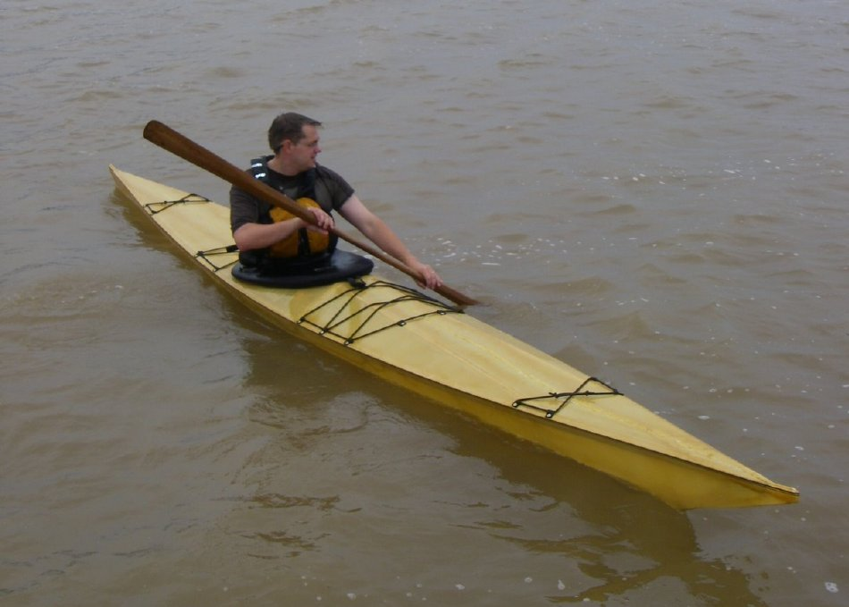

| Sea Cruiser by Joshua Parma (US) | Menu Previous Page Next Page |
|

Joshua, from Green Bay, Wisconsin paddles his Sea Cruiser. His comments..... "I've recently finished my Sea Cruiser (my fourth kayak build) and I'm very pleased with not only the design and performance of the boat, but the construction methods as well. The kayak is fast, stable, and very light, rolls well, and looks fantastic. The build time was way less than half that of the other boats I've built, and it cost much, much less to make."
|
|